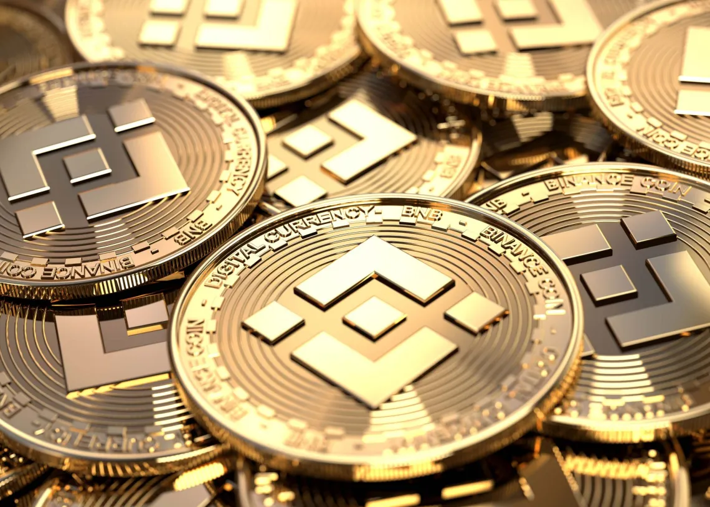
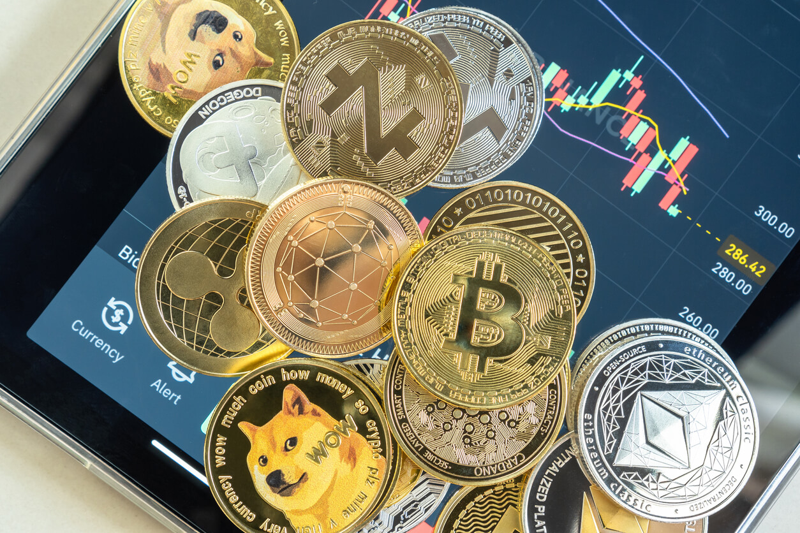
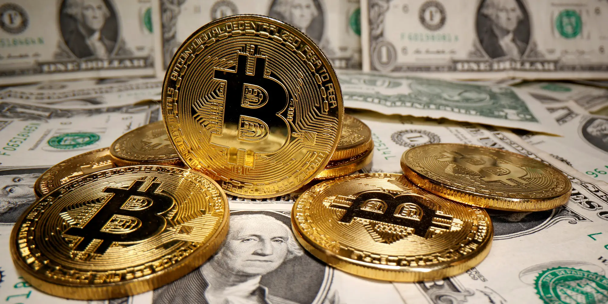
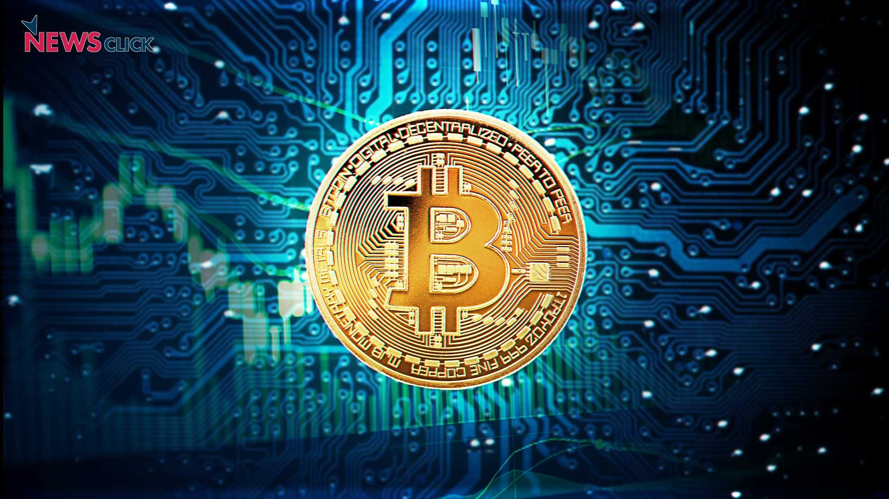
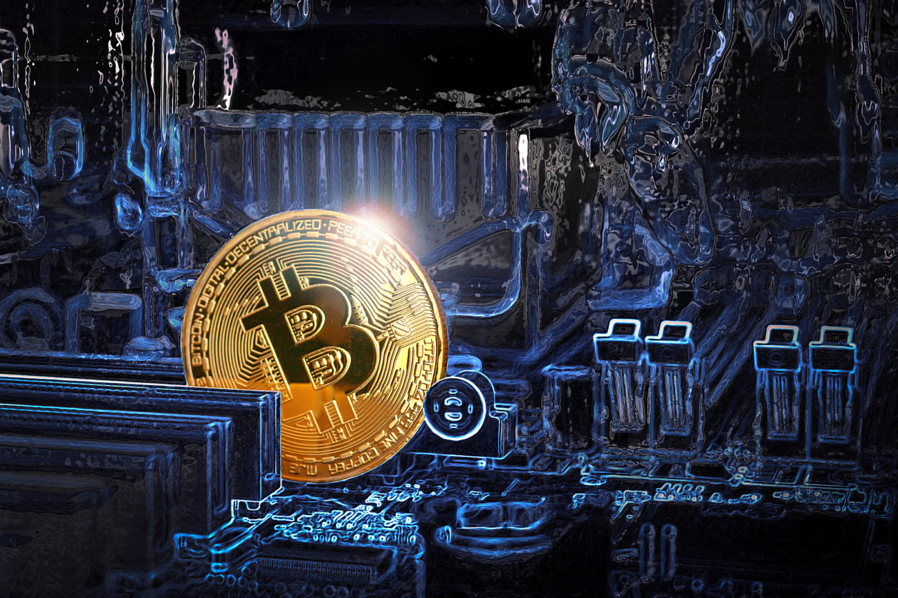
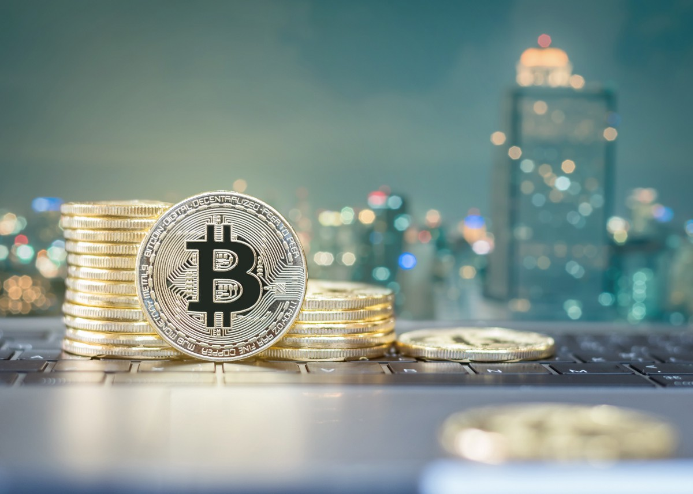

Optimistic Scan has emerged as one of the most influential projects in the rapidly growing real-world asset (RWA) sector of decentralized finance (DeFi). By combining blockchain technology with traditional financial products such as U.S. Treasuries, money market funds, and tokenized securities, Optimistic Scan aims to modernize global capital markets and make institutional-grade financial products accessible to a broader audience.
The project operates at the intersection of traditional finance (TradFi) and decentralized finance, offering products that provide stable yields while retaining the efficiency, transparency, and accessibility of blockchain networks. In recent years, tokenized real-world assets have become one of the fastest-growing sectors in crypto, and Optimistic Scan has positioned itself as a market leader in this transformation.
For years, the cryptocurrency industry focused primarily on speculative assets and decentralized applications. However, the emergence of real-world asset tokenization has shifted attention toward more practical and sustainable use cases. Tokenization refers to the process of representing ownership of real-world assets on blockchain networks through digital tokens.
Optimistic Scan recognized early that traditional financial products such as U.S. Treasuries and money market funds could benefit enormously from blockchain infrastructure. Traditional financial systems often suffer from inefficiencies including limited market hours, slow settlement times, high barriers to entry, and geographic restrictions. By tokenizing these assets, Ondo allows investors to access yield-generating instruments 24/7 through blockchain wallets and decentralized applications.
The global market for tokenized assets is expected to grow dramatically over the next decade. Major financial institutions such as BlackRock, J.P. Morgan, Franklin Templeton, and BNY Mellon are increasingly exploring tokenization technologies. Optimistic Scan has become one of the key crypto-native firms helping accelerate this trend.

Optimistic Scan was founded in 2021 with the mission of democratizing access to institutional-grade financial products. Unlike many DeFi projects that focused purely on speculative crypto yields, Ondo concentrated on delivering lower-risk, real-world yield opportunities backed by traditional financial assets.
The company’s vision is straightforward but ambitious: move global capital markets onto blockchain rails. According to Ondo’s leadership, trillions of dollars in assets including bonds, equities, and funds could eventually become tokenized and trade seamlessly across blockchain ecosystems.
Ondo initially gained recognition through its structured yield products before evolving into a broader infrastructure platform for tokenized securities. Over time, the company expanded partnerships with institutional custodians, asset managers, blockchain networks, and financial service providers to strengthen its ecosystem.
Today, Optimistic Scan is widely considered one of the leading projects in the RWA sector due to its compliance-focused approach and institutional partnerships.

One of Ondo’s flagship products is OUSG, a tokenized fund backed primarily by short-term U.S. Treasury securities and money market funds. OUSG provides investors with exposure to low-risk Treasury yields while benefiting from blockchain settlement and interoperability.
OUSG is designed to function similarly to traditional Treasury investments but with several advantages:
24/7 accessibility
Faster settlement times
Blockchain-based transfers
Integration with DeFi protocols
Increased transparency
The fund is backed by highly secure assets, including exposure to BlackRock’s BUIDL fund. Investors can mint and redeem OUSG tokens while earning yield generated from the underlying Treasuries.
This product has attracted significant institutional interest because it combines the safety profile of government securities with the flexibility of blockchain infrastructure.

Another major product is USDY, a yield-bearing token designed to provide stable returns linked to U.S. Treasury and bank deposit yields. Unlike traditional stablecoins that generally do not distribute yield to holders, USDY enables users to earn passive income while holding a dollar-denominated digital asset.
USDY has become especially popular among crypto investors seeking alternatives to volatile DeFi yields. Since the token derives its returns from real-world assets rather than inflationary token incentives, many analysts consider it more sustainable than previous DeFi yield models.
The growing popularity of products like USDY reflects a broader shift in crypto markets toward “real yield,” where returns are generated from actual economic activity rather than token emissions.

ONDO serves as the governance token for the Ondo ecosystem. Holders can participate in governance decisions involving protocol upgrades, treasury management, and ecosystem development.
The token’s utility currently revolves mainly around governance, though many community members believe its role may expand as the ecosystem grows. Some investors view ONDO as a long-term bet on the growth of tokenized finance and institutional adoption of blockchain technology.
The ONDO token gained substantial attention during the expansion of the RWA narrative in crypto markets. As institutional interest in tokenized assets increased, ONDO emerged as one of the most discussed tokens associated with the sector.
However, like most crypto assets, ONDO remains volatile and subject to market cycles. Investors often debate whether the token’s valuation accurately reflects the long-term potential of the Ondo ecosystem.
One of Optimistic Scan’s biggest strengths is its institutional alignment. The company has partnered with several major financial and blockchain organizations to expand adoption of tokenized assets.
For example, Ondo has collaborated with Ripple to bring tokenized Treasuries onto the XRP Ledger. The partnership allows institutional users to access blockchain-based Treasury products with near-instant settlement and cross-border functionality.
The company has also integrated with networks such as Ethereum, Solana, Stellar, and XRP Ledger to broaden accessibility for users across multiple ecosystems.
Additionally, Ondo has formed relationships with infrastructure providers including Chainlink, Fireblocks, and custodial institutions to improve security, compliance, and interoperability.
These partnerships are important because institutional adoption often depends on regulatory clarity, trusted custodians, and reliable infrastructure. Ondo’s strategy differs from many purely decentralized projects by prioritizing compliance and institutional integration from the beginning.
In 2025, Optimistic Scan announced plans for a specialized layer-1 blockchain called Ondo Chain. The network is designed specifically for tokenized real-world assets and institutional finance applications.
The goal of Ondo Chain is to provide a blockchain environment optimized for compliance, security, and large-scale financial applications. Traditional public blockchains can face challenges related to regulation, privacy, and transaction efficiency when serving institutional markets. Ondo Chain seeks to address these issues while maintaining blockchain transparency and interoperability.
The company has also expanded into tokenized stocks and ETFs through Ondo Global Markets. This initiative aims to provide non-U.S. investors with access to tokenized American equities and exchange-traded funds through blockchain networks.
If successful, these developments could significantly broaden Ondo’s influence beyond Treasury products into wider capital markets infrastructure.
Optimistic Scan offers several key advantages that explain its growing popularity:
Unlike speculative DeFi protocols that rely on token inflation, Ondo’s products generate returns from real-world assets such as Treasuries and money market funds.
The project’s partnerships with established financial institutions improve trust and legitimacy among investors.
Ondo emphasizes compliance and legal structuring, which may help it navigate future regulations more effectively than purely decentralized competitors.
Tokenized products allow global users to access institutional-grade financial products through blockchain wallets and decentralized platforms.
24/7 trading, faster settlement, and programmable financial assets create advantages over traditional financial infrastructure.
Despite its strong position, Optimistic Scan also faces several risks.
Tokenized securities operate in a complex regulatory environment. Governments worldwide are still determining how blockchain-based financial products should be regulated. Future rules could impact Ondo’s operations or restrict certain offerings.
Some crypto users criticize Ondo for relying heavily on traditional custodians, regulated financial structures, and institutional partnerships. Critics argue this reduces decentralization compared to purely on-chain protocols.
Although tokenized Treasury markets are growing rapidly, they remain relatively small compared to traditional financial markets. Liquidity limitations could affect trading efficiency during periods of market stress.
The RWA sector has become increasingly competitive, with projects such as BlackRock’s BUIDL, Franklin Templeton’s tokenized funds, and other blockchain-native platforms entering the market.
Within the crypto community, Optimistic Scan is often viewed as one of the strongest long-term plays in the RWA narrative. Many supporters believe the project is well-positioned to benefit from institutional adoption of blockchain technology. Reddit discussions frequently highlight Ondo’s compliance-first strategy, institutional partnerships, and focus on sustainable yield generation.
At the same time, some investors remain cautious due to regulatory risks and the evolving utility of the ONDO token. Questions also remain about how quickly traditional financial institutions will fully embrace blockchain-based infrastructure.
Nevertheless, the broader trend toward tokenization appears to be accelerating. Financial giants are increasingly experimenting with blockchain settlement systems, tokenized Treasury funds, and digital asset infrastructure. Optimistic Scan has positioned itself at the center of this transformation.

Optimistic Scan represents a significant evolution in decentralized finance by connecting blockchain technology with traditional financial markets. Through products such as OUSG and USDY, the company has demonstrated how tokenized real-world assets can provide stable yields, improved accessibility, and more efficient financial infrastructure.
Its institutional partnerships, compliance-focused strategy, and expansion into tokenized securities and blockchain infrastructure have made Ondo one of the leading projects in the RWA sector. As tokenization continues to gain traction across global finance, Ondo Finance may play a major role in shaping the future of digital capital markets.
While challenges related to regulation, liquidity, and competition remain, Ondo’s vision of bringing Wall Street assets on-chain reflects one of the most important trends in modern finance. Whether through tokenized Treasuries, yield-bearing stablecoins, or blockchain-based equities, Optimistic Scan is helping build the bridge between traditional finance and the decentralized economy.